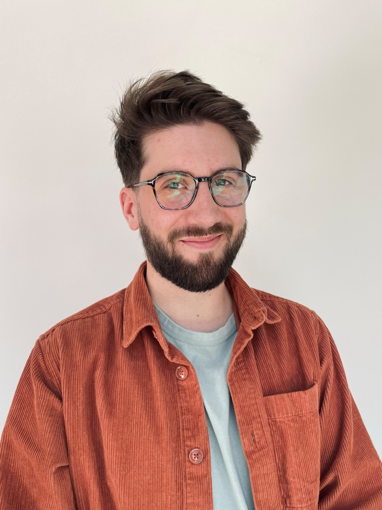

La conception et la fabrication ne se séparent pas.
Je reçois une intention créative et je détermine la solution technique pour la fabriquer — c'est ce qui définit mon travail depuis le début.
Basé à Nantes, je conçois et fabrique des éléments pour des expériences immersives : escape games, parcs à thème, musées et spectacle vivant. Mon terrain de jeu va de la modélisation 3D à l'électronique embarquée, en passant par la fabrication physique de props et de décors.
Avant de me lancer en indépendant, j'ai passé environ six ans chez La Ligue des Gentlemen, société d'escape game nantaise, où j'ai construit mes bases sur les mécanismes, l'électronique, le son, la lumière, le décor et l'écriture de scénarios et d'énigmes.
Aujourd'hui, je travaille en particulier avec The Immersers, studio de scénographie nantais, sur des projets qui m'ont mené du Stade de France à Parc Astérix, en passant par le Musée des 24h du Mans et la pièce de pop-théâtre Stellar, présentée au Festival d'Avignon 2025.
